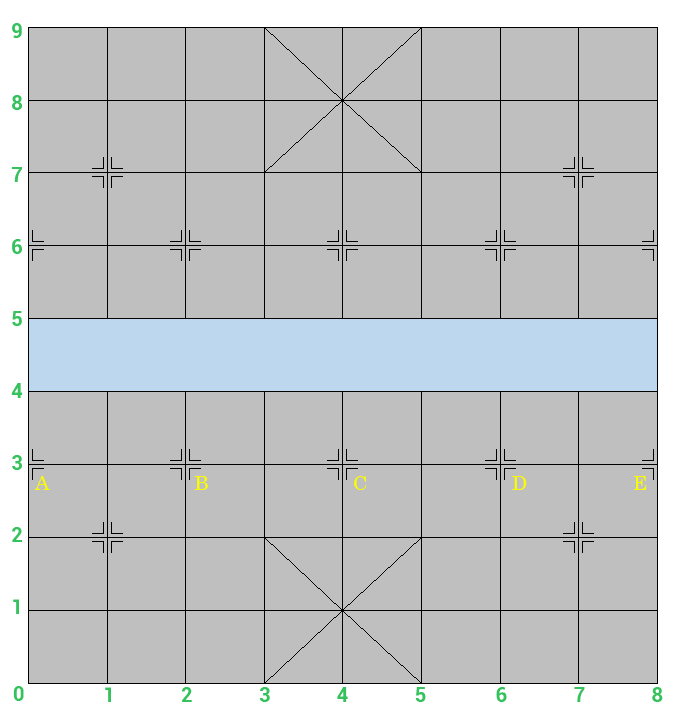

(Post giúp VietNamVoDich)
Cho bàn cờ tướng với một dòng sông như hình vẽ. Khác với cờ Vua, trong cờ Tướng, các quân cờ không được đặt ở giữa các ô vuông mà được đặt ở giữa các đường kẻ ngang và dọc.

Trong cờ tướng, quân Tốt là quân di chuyển từng ô một tiến về phía trước, không đi lùi. Sau khi sang sông, quân Tốt có thể đi sang trái một ô, sang phải một ô hoặc tiến về trước một ô. Ban đầu, có 5 vị trí đặt quân Tốt là A, B, C, D, E như hình vẽ.
Yêu cầu: Giả sử có một quân địch đang ở vị trí (y, x), dòng y cột x. Hỏi quân tốt nào có thể đi tiêu diệt quân địch nhanh nhất (số bước di chuyển đến vị trí quân địch ít nhất).
Dữ liệu nhập:
- Là hai số nguyên y, x, mỗi số cách nhau một khoảng trắng (0 ≤ y ≤ 9 và 0 ≤ x ≤ 8), dữ liệu cho đảm bảo quân địch không nằm ở vị trí nào của 5 quân tốt.
Dữ liệu xuất: gồm 2 dòng:
Nếu có quân Tốt tiêu diệt được quân địch, in ra 2 dòng:
- Dòng 1: Số bước đi ngắn nhất đến vị trí quân địch.
- Dòng 2: quân Tốt nào trong 5 quân tốt A, B, C, D, E đến vị trí đó (nếu có hai quân Tốt có số bước bằng nhau thì in ra quân Tốt bất kỳ)
Nếu không có quân Tốt nào đến được vị trí quân địch, in ra -1.